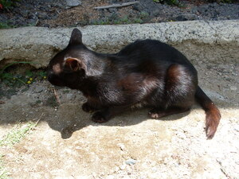
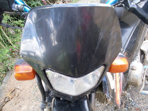

item  
/ʔitɔm/
adj_rt.
“black”
adj.
(meitem, mA1-) black or brown as in brown skin
Ka seini ne lalag iyan sika se batek ne marusilem wey kenè ne maangkag.
Meitem ne gapun seeyè te langit.
Black cloud to the sky.
Cult. The Matigsalugs see themselves as black and Caucasians and Chinese as white.
Ant. maangkag —white
Eng. black; brown-skinned; ebony; color variety; colour variety
Tag. itím
Ceb. itum
Ilo.: nangísit
Tigwanon: ʔitem
Binukid: ʔitem
Sarangani: ʔitem
WBM: ʔitem
Ilianen: ʔitem
Dibabawon: ʔitem
Cotabato Manobo: ʔitem
Tasaday: ʔitem
Cagayano: mitem
Kinamigin: ʔitum
Tagbawa: mɛtem
Obo: mɛtem
Proto: ʔitem
OCM: Cultural Identity and Ethnocentrism (186), Visual Arts (5311), Ethnic Stratification (563)
DDP: Skin (2.1.4)
Online dict status: -
Usage level: B
v.
for something (egmeitem, migmeitem/immeitem, theme, eg-mA1-) to become black
Eng. black, to become
Online dict status: -
Usage level: M
adj.
(meitem-item, mA1-rdpRT-) tan
Nakasinug-ung kew te etew ne malangkew wey meitem-item?
Have you came across a tall and tan man?
Eng. blackish; brownish; tan; color variety; colour variety
Online dict status: -
Usage level: M
Updated by: RJH,AAA,RJH,NJK,QDL,NJK
Last updated: 09/Jun/2014
"meitem" in healthbook "Eg-ay-ayaran ta ka me ngipen ta"
This page last updated: 03-Jan-2020
Copyright © 2009-2014, Matigsalug Language Christian Association, Inc